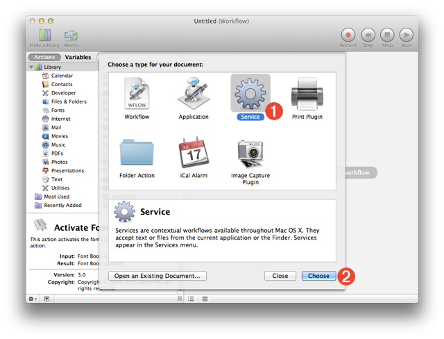
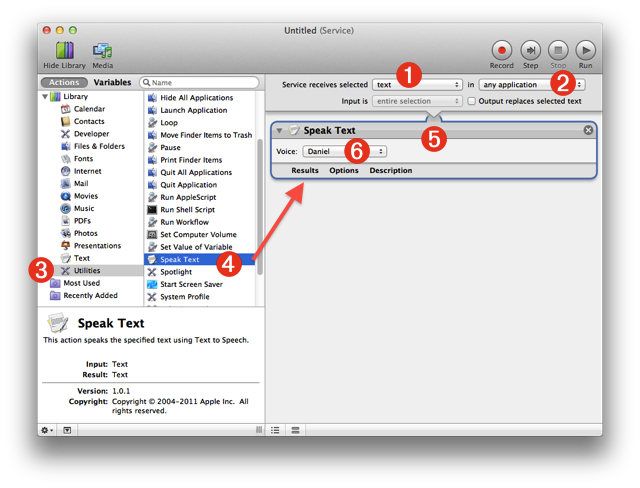
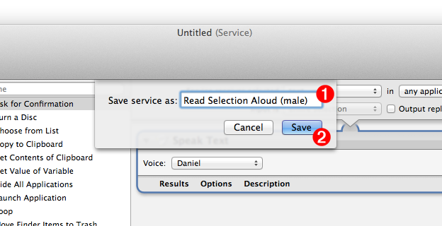
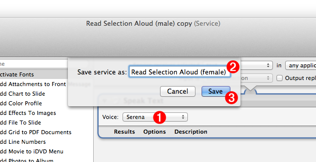

Once the high-quality voices have been installed on your computer, you can create the automation tools for speaking selected text using the installed voices, and for rendering selected text, using the installed voices, as spoken audio files to be added to a GarageBand slideshow podcast.
The automate the processing of text, we'll create four OS X services using Automator, the application with the robot icon in the Launchpad, that serves as your personal automation assistant.
Automator is a special application used to create automation recipies (called “workflows”), using a simple drag-and-drop process that connects the individual steps of the automation recipe (called “actions”) into a Automator document. Automator documents can be saved in a variety of formats, including as self-running applets, PDF Print plugins, iCal alarms, Image Capture plugins, amd even as OS X services that are accessed via contextual menus and keyboard shortcuts throughout the system.
TIP: For a thorough introduction to Automator, watch this short movie. For a thorough introduction to Services, watch this short movie.
So let’s create some services, starting with the ones for speaking selected text using either a male or female voice.
NOTE: The Workshop Session Kit includes a folder containing four Automator workflow files whose creation is described in this section. If you wish to install the existing workflows instead of creating them, follow these instructions.
DO THIS ►Click the robot icon (his name is “Otto”) in Launchpad to launch Automator:
Once Automator has launched, a workflow window displaying a drop-down sheet of workflow template icons, will appear (see below). These icons represent the various ways in which the workflows can be saved and implemented on your computer.
DO THIS ►For the purposes of this example, choose to create a OS X Service by clicking the gear icon 1 , follwed by clicking the “Choose” button 2 .

Once the Service option has been chosen, the workflow window will be transformed into a blank OS X service workflow (see below). Service workflows begin with an input data panel where you indicate the type of data the service is to accept, and the application in which the service is to be available. The default settings of selected text 1 from any application 2 , will be perfect as input for our first service that speaks the selected text using a specified voice.

With the data input for the service chosen, we can now add the Automator actions that will perform the task of reading aloud the selected text, to the workflow (see above).
DO THIS ►Select the “Utilities” category in the Automator actions library list on the left side of the document window 3 , to reveal the available actions for that category. Drag the “Speak Text” action from the actions list 4 into the workflow area of the window. Release the mouse and a view containing the controls for the added action will be displayed 5 . Next, select the name of the male voice you installed, from the list of voice names displayed on the popup menu in the action view 5 .
The service workflow is now complete and is ready to be saved and installed in the system.
DO THIS ►Choose “Save” from the Automator “File” menu, and in the forthcoming naming sheet 1 (see below) name the new service: Read Selection Aloud (male). Click the “Save” button 2 to complete the creation and installation process.

The new service will automatically be saved into the Services folder in your Library folder and installed in the system.
Now that the service for reading selected text using a male voice is created, let’s create one using the female voice. This can easily be accomplished by duplicating the existing service workflow and changing the selected voice in the “Speak Text” action to the female voice you installed.
DO THIS ►From the Automator “File” menu select the menu option titled: Duplicate
A dupicate of the existing service workflow will be created and displayed, ready for editing.

DO THIS ►Change the voice on the popup menu 1 to be the high-quality female voice you installed. Choose “Save” from the “File” menu and in the forthcoming naming sheet 2 (see above), change the workflow service name to “Read Selection Aloud (female)”. Finally, click the “Save” button 3 to complete the creation and installation of the new service.
Congratualtions! You have now created and installed two services for reading aloud text selected in any application. You will use them shorlty, but first, we’ll create services that render selected text to an audio file using the voices you installed.